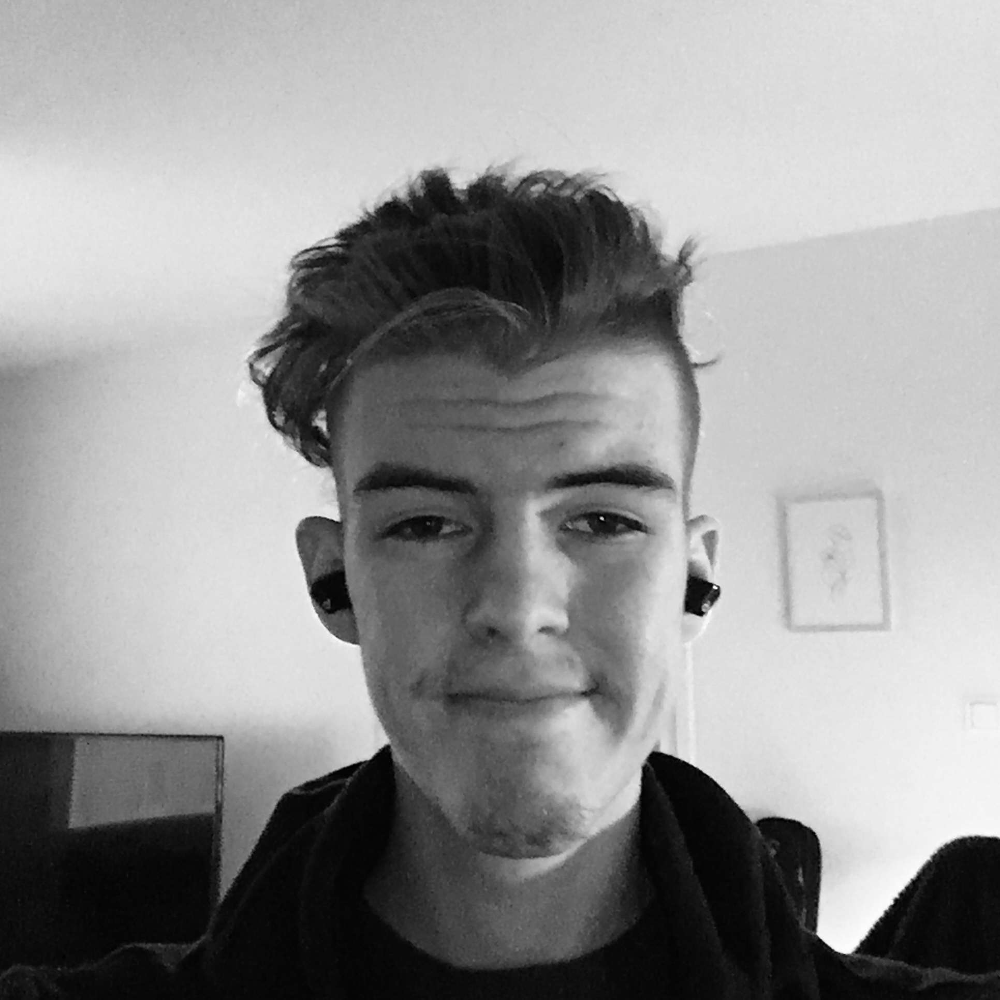

Hei, olen iiro!
Olen Iiro Välimaa, 23-vuotias mies, joka rakastaa kahvia ja koodaamista. Opiskelen parhaillaan kolmatta vuotta Savonialla tietotekniikan insinööriksi. Erikoistun ohjelmistotekniikkaan.
Olen kasvanut perheessä, jossa teknologia on ollut aina lähellä. Näin olen kasvanut osaavaksi teknologian taitajaksi. Tämän lisäksi olen saanut vaikutteita isältäni, joka on toiminut alalla yli 25 vuotta.
Tykkään pääasiassa tehdä nettisivuja ja kokemusta löytyy paljolti full stack -ohjelmoinnista. Olen myös etevä Javan, C# ja Pythonin kanssa. Viime aikoina olenkin viettänyt näiden parissa enemmän aikaa ja luonut niillä omaa elämää helpottavia sovelluksia.